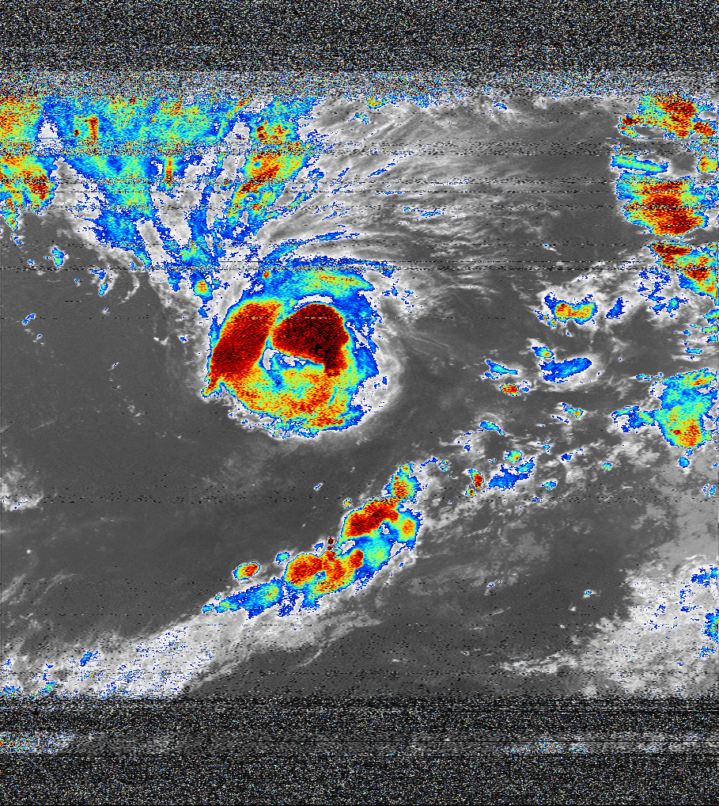
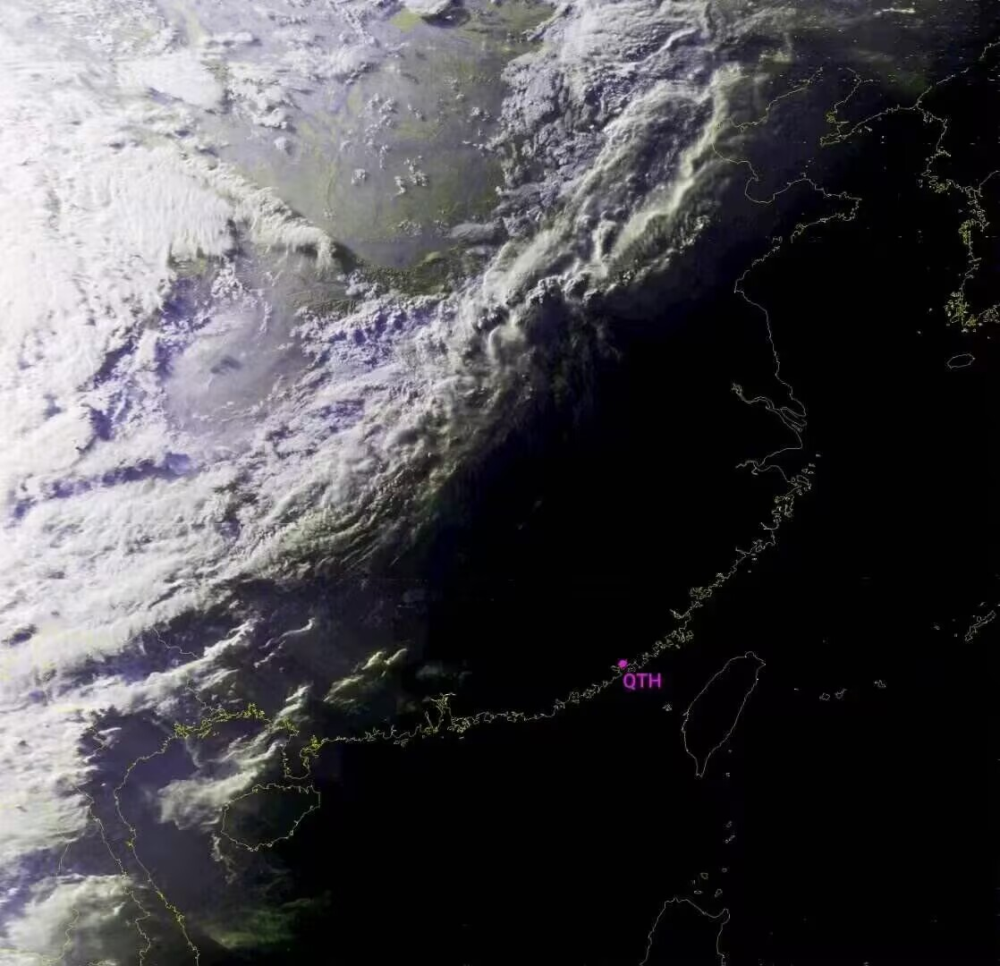
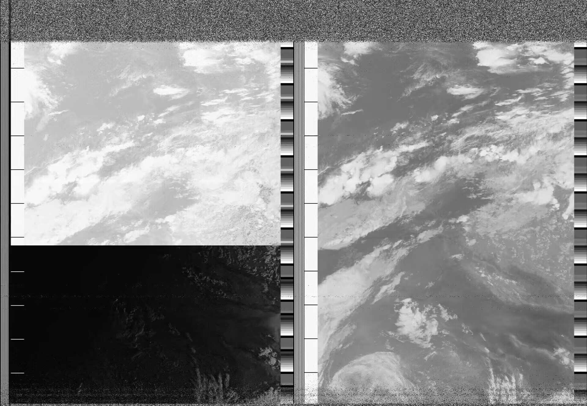
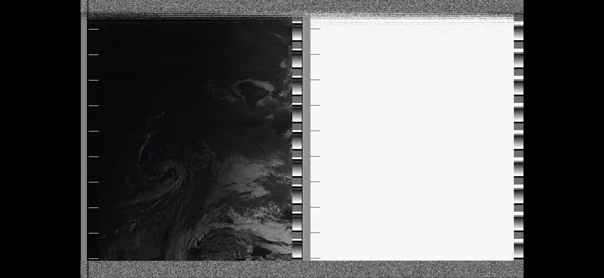
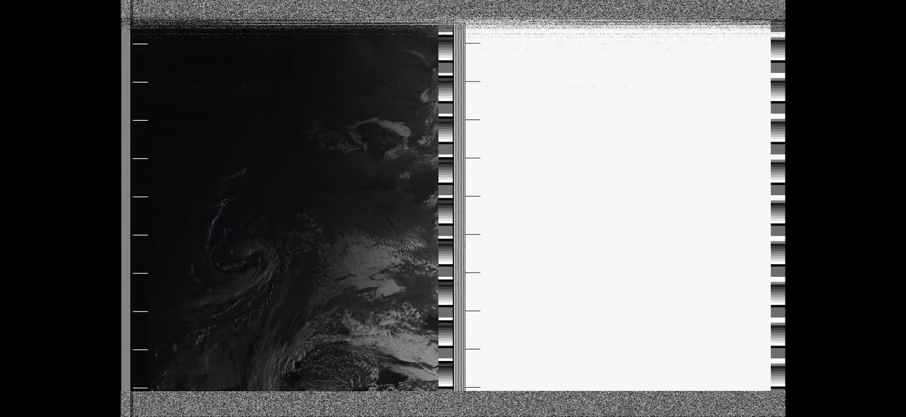

感谢NOAA卫星的卓越贡献
在NOAA极轨卫星（如NOAA-15/18/19）陆续退役的今天，它们的APT（自动图像传输）系统依然是业余无线电和气象爱好者心中不可替代的经典。这些卫星在137MHz频段下传的模拟信号，曾以极低的接收门槛（仅需RTL-SDR和简单天线）让全球无数普通人首次触摸到来自太空的第一手原始气象数据。
尽管新一代卫星（如JPSS系列）已转向高分辨率数字传输，但退役NOAA卫星的APT信号因其独特的亲和力仍在被追忆，它们开启了公民气象观测的新时代。
进入赛博上香页面NOAA卫星影像画廊
NOAA卫星在轨运行示意图

NOAA-19 HRPT的AVHRR/3影像

NOAA-15 APT拍摄的台风影像

高分辨率图像传输(HRPT)示例

NOAA-15仅剩可见光传感器时拍摄的中国大地

NOAA-15切换传感器的图像（左边上半部分为红外，下半部分为可见光）
NOAA-15 退役倒计时
00
天
00
时
00
分
00
秒
NOAA卫星退役时间线
2025年5月31日
NOAA-18 STX-4 S波段下行链路发射机出现异常，导致图像质量下降和数据丢失。
2025年6月16日
向用户发出了暂停POES数据的30天提醒。
2025年6月16日
向用户发出暂停POES数据（NOAA-15和NOAA-19）的3天提醒。NOAA-18由于S波段发射机损坏，于2025年6月6日1740 UTC退役。
2025年6月16日 1800 UTC
NOAA暂停向用户提供POES数据（NOAA-15和NOAA-19）。NOAA-15和NOAA-19将开始生命周期终止（EOL）测试活动。从生产分发和访问（PDA）交付的运营产品现已暂停。
2025年8月6日
NOAA已完成NOAA-15和NOAA-19的报废（EOL）测试活动，并将很快开始退役过程。剩余的两颗卫星远远超出了它们的设计寿命。
卫星已进入"暮光阶段"，故障可能性越来越大。
卫星已进入"暮光阶段"，故障可能性越来越大。
2025年8月#8
这是NOAA-15计划于2025年8月12日1506至1520 UTC退役的最后提醒。NOAA-19将于一周后的2025年8月19日发布。
2025年8月11日
NOAA-19突发问题（疑似电池损坏），导致APT与HRPT损坏，仅剩DSB。
2025年8月#9
由于NOAA-19异常，NOAA-15退役被推迟到8月18日这一周，确切的日期待定。
2025年8月#11
NOAA发出了NOAA-15计划于2025年8月19日1522至1537 UTC退役的最后提醒。
2025年8月BTC 23:27:12
NOAA-15被NOAA官方通过指令关闭。一个时代的终结！

